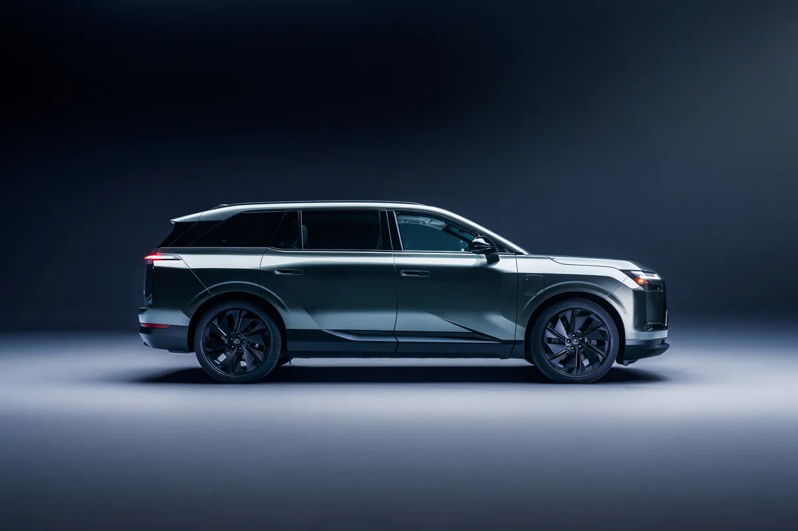
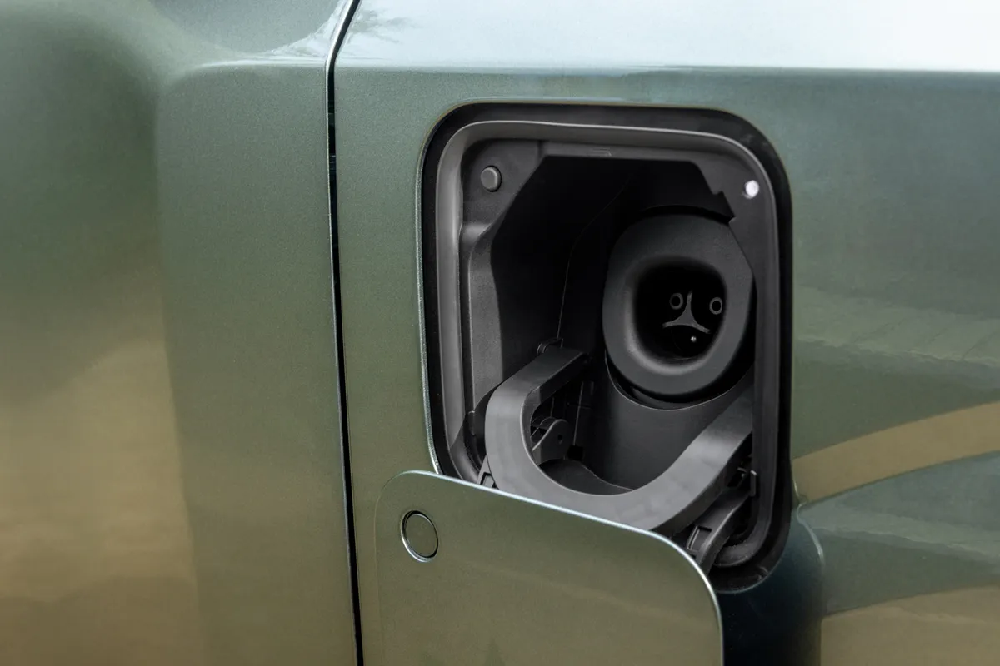
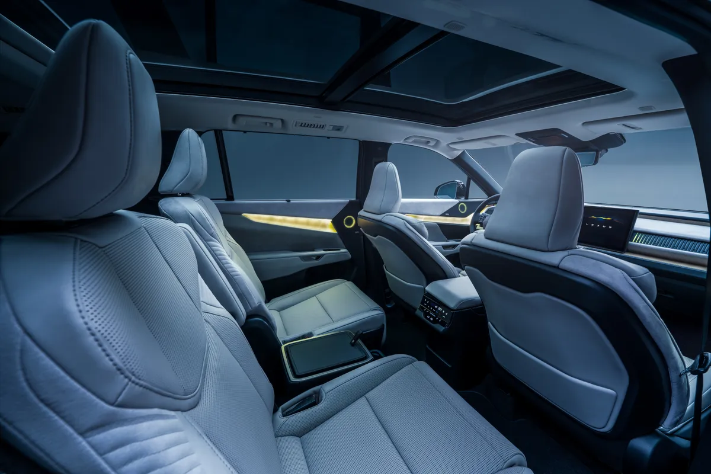
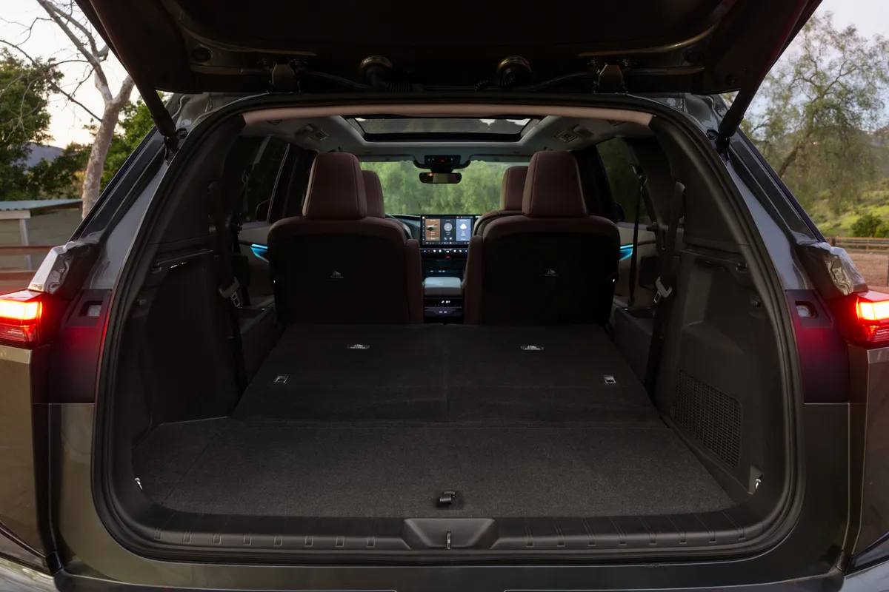
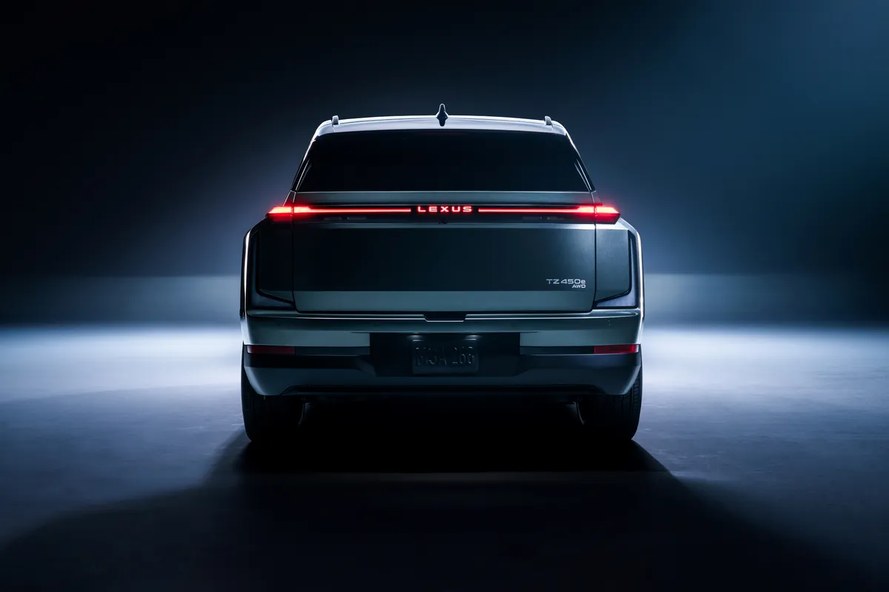
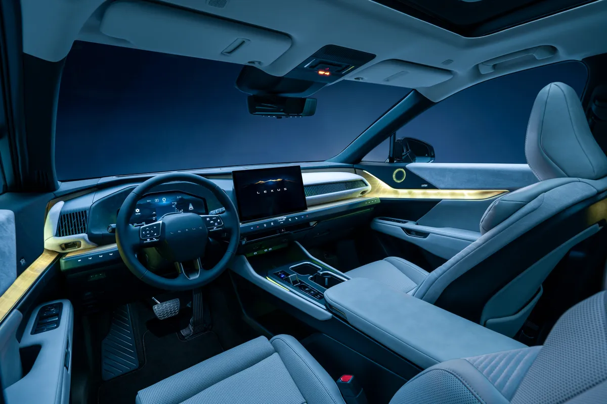

▲ 렉서스 첫 3열 전기 SUV 2027 TZ ⓒ Lexus
"402마력은 옵션이었다." 렉서스가 첫 3열 전기 SUV 2027 TZ의 미국 시장 가격과 파워트레인 사양을 확정했다. 가장 싼 'TZ 450e 프리미엄'이 6만 4,050달러(배송비 1,550달러 포함)에서 시작하는데, 기본 시스템 출력은 308마력이다. 공개 당시 알려졌던 402마력은 럭셔리 등급에 딜러 장착 '퍼포먼스 업그레이드'를 더해야 나온다.
미국 전기차 전문매체 InsideEVs는 이 발표를 두고 "가격은 6만 5,000달러 안팎인데 출력은 예상보다 훨씬 낮다"는 취지로 보도했다. 이 글은 InsideEVs 보도를 출발점으로, 렉서스 미국 뉴스룸과 Electrek·TFLcar·Carscoops·Automotive Addicts 등의 내용을 교차해 정리했다.
1. 6만 4,050달러부터 — 3개 등급 가격표
렉서스는 TZ를 프리미엄·프리미엄 투어링·럭셔리 세 등급으로 내놓는다. Electrek이 정리한 가격은 모두 배송·처리·취급비 1,550달러를 포함한 금액이다. 제목의 '6만 5,000달러'는 InsideEVs가 6만 4,050달러를 어림해 쓴 표현이고, 배송비를 뺀 차량 가격은 산술적으로 프리미엄 6만 2,500달러(본 매체 계산)가 된다. 모든 등급이 듀얼 모터 AWD이며, 등급에 따라 배터리와 휠, 주행거리가 갈린다.
| 등급 | 가격(배송비 포함) | 배터리 | 추정 주행거리 | 인도 시기 |
|---|---|---|---|---|
| TZ 450e 프리미엄 AWD | $64,050 | 76.96kWh | 253마일(약 407km) | 2026년 말 |
| TZ 450e 프리미엄 투어링 AWD | $72,050 | 95.82kWh | 315마일(약 507km) | 2027년 초 |
| TZ 450e 럭셔리 AWD | $80,550 | 95.82kWh | 279마일(약 449km) | 2027년 초 |
주행거리를 킬로미터로 환산한 값은 마일 수치에 1.609를 곱한 근사치이며, 미국 제조사 추정치라 국내 인증 수치와는 다를 수 있다. 럭셔리는 22인치 휠이 기본이라 20인치 휠의 투어링보다 주행거리가 짧다는 것이 AutoGuide의 설명이다. 원화 환산은 환율에 따라 달라지므로 싣지 않는다.
▲ 렉서스가 공개한 첫 3열 전기 SUV 2027 TZ의 전면부 — 각진 실루엣과 L자 라이팅이 특징이다 ⓒ Lexus
2. "402마력"은 어디로 갔나 — 308마력과 퍼포먼스 업그레이드
InsideEVs가 문제 삼은 대목은 출력이다. 렉서스가 5월 TZ를 처음 공개했을 때 알려진 시스템 출력은 402마력(300kW)이었는데, 이번에 확정된 기본 듀얼 모터 사양은 308마력, 323lb-ft(약 438Nm)다. InsideEVs는 이를 100마력 가까이 낮아진 것으로 전했고, 420마력인 스바루 게타웨이는 물론 338마력인 토요타 하이랜더 EV보다도 약하다고 비교했다.
다만 402마력이 사라진 것은 아니다. Automotive Addicts와 렉서스 딜러 사양 안내(Lexus of Riverside)는 럭셔리 등급 전용 '퍼포먼스 업그레이드'를 고르면 402마력이 나오고 0→60mph가 5.2초로 줄어든다고 전했다. 이 업그레이드는 딜러 장착 방식이라고 Automotive Addicts가 적었고, TFLcar도 럭셔리 등급 옵션으로 402마력이 남는다고 보도했다. 반면 Carscoops는 이 옵션을 언급하지 않고 전 등급 308마력이라고만 적었다. 렉서스 미국 뉴스룸 보도자료에는 마력 수치가 아예 없다.
📍 이 글이 정리한 결론
기본 308마력, 럭셔리에 딜러 장착 퍼포먼스 업그레이드를 더하면 402마력이라는 것이 복수 매체 보도의 공통분모다. 업그레이드 가격과 국내 제공 여부는 확인되지 않았다.
| 항목 | 내용 | 출처 |
|---|---|---|
| 구동 방식 | 듀얼 모터 AWD, 진화한 DIRECT4 | 렉서스 뉴스룸 |
| 기본 시스템 출력 | 308마력 (참고: 공개 당시 402마력 보도) | InsideEVs·Electrek·TFLcar |
| 퍼포먼스 업그레이드 | 럭셔리 전용, 딜러 장착, 402마력, 0→60mph 5.2초 | Automotive Addicts·Lexus of Riverside |
| 토크 | 323lb-ft | TFLcar·Carscoops |
| 0→60mph (기본) | 프리미엄 6.2초, 투어링·럭셔리 6.5초 | Carscoops |
| 최고 속도 | 112mph(약 180km/h) | Carscoops |
| 토크 배분 | 가속 시 앞:뒤 60:40~0:100, 코너링 시 80:20~0:100 | 렉서스 뉴스룸 |
0→60mph 6초대 초반은 3열을 갖춘 대형 전기 SUV로서 일상 주행에 부족하지 않다는 해석도 가능하다. 다만 이는 우리의 해석이며, 실제 체감은 시승기를 기다려야 한다. 0→60mph와 최고 속도 수치는 Carscoops 보도를 따랐다.

▲ TZ는 휠베이스 약 3,050mm(120.1인치)의 긴 차체를 가졌다 (Electrek·위키백과 기준) ⓒ Lexus
3. 배터리 2종과 충전 — 253마일에서 315마일까지
TZ는 76.96kWh와 95.82kWh 두 가지 리튬이온 배터리를 쓴다. 가장 싼 프리미엄은 작은 팩으로 253마일, 프리미엄 투어링은 큰 팩으로 315마일이다. 럭셔리는 같은 큰 팩이지만 22인치 휠 때문에 279마일로 떨어진다. 렉서스 뉴스룸은 "일부 등급이 300마일 안팎"이라고만 밝혔다.
| 충전 방식 | 76.96kWh | 95.82kWh |
|---|---|---|
| DC 급속 150kW (10→80%) | 약 28분 | 약 35분 |
| AC 11kW 기본 (완충) | 약 420분 | 약 540분 |
| AC 19kW 옵션 (완충) | 약 270분 | 약 390분 |
Electrek은 10→80%가 "약 35분"이라고 했고 TFLcar는 28~35분이라고 적었는데, 이는 작은 팩과 큰 팩의 차이로 설명된다. 위 표의 AC 충전 시간은 딜러 사양 안내 수치이며 실제로는 기온과 조건에 따라 달라진다.
✅ 충전·에너지 관련 확인 사항
· 충전 포트는 NACS(테슬라 슈퍼차저 호환) 2-in-1 방식, 전동식 슬라이딩 커버 적용 (렉서스 뉴스룸)
· DC 급속충전은 최대 150kW — 두 배터리 모두 같은 최대치다
· 양방향 충전과 플러그 앤 차지 지원 (Automotive Addicts·Carscoops 보도)
· 배터리 프리컨디셔닝·출발 시간 예약 프리컨디셔닝 등 충전 보조 기능 탑재 (렉서스 뉴스룸)

▲ TZ의 충전구 — 북미 표준 NACS 포트를 채택했다 ⓒ Lexus
4. 3열 전기 SUV — 크기와 실내 공간
TZ의 치수는 전장 5,100mm(200.8인치), 전폭 1,990mm(78.3인치), 전고 1,705mm(67.1인치), 휠베이스 3,050mm(120.1인치)다(Electrek·위키백과 일치). 위키백과는 공차중량을 약 2,630kg으로 적었다. 렉서스 뉴스룸은 저상 플로어와 긴 휠베이스를 앞세워 "라운지 같은 편안함"을 강조하는 '드라이빙 라운지' 콘셉트를 내세웠다.

▲ 2열은 독립형 캡틴 체어 구성이며 통풍 시트와 전동 오토만이 들어간다고 렉서스는 밝혔다 ⓒ Lexus
| 항목 | 내용 |
|---|---|
| 시트 구성 | 6인승(3열), 2열 캡틴 체어, 워크인 버튼 (렉서스 뉴스룸·Automotive Addicts) |
| 시트 기능 | 운전석·조수석·2열 통풍, 조수석·2열 전동 오토만(렉서스 SUV 최초라고 소개) |
| 오디오 | 마크 레빈슨 21스피커 (옵션) |
| 인포테인먼트 | 14인치 렉서스 인터페이스(Automotive Addicts), AT&T 5G, 무선 애플 카플레이·안드로이드 오토 |
| 조명 | 6가지 일본풍 테마 앰비언트 라이트 |
| 친환경 소재 | 시코쿠산 단조 대나무 트림, 바이오 기반 울트라스웨이드, 재활용 알루미늄 루프레일 |
| 항목 | 수치 |
|---|---|
| 전 좌석 사용 시 | 13.8입방피트(약 391L) |
| 3열 접었을 때 | 47.0입방피트(약 1,331L) |
| 2·3열 모두 접었을 때 | 91.5입방피트(약 2,591L) |
| 견인 능력 | 프리미엄 2,400파운드, 투어링·럭셔리 3,500파운드 |
리터 환산은 입방피트에 28.317을 곱한 근사치다. 91.5입방피트와 견인 수치는 Carscoops와 딜러 사양 안내가 일치한다.

▲ 2열과 3열을 접으면 평평한 적재 공간이 나온다 ⓒ Lexus
5. 디자인·안전·주행 기술
렉서스는 디자인 철학으로 '프로보커티브 심플리시티(Provocative Simplicity)'를 제시했다. 앞쪽에는 L자 모양의 트윈-L 시그니처 램프가 들어가고, 후면은 L자 테일램프가 이어진다. 공기저항계수는 0.27이며 20·22인치 휠을 고를 수 있다. 실내 배색은 버치·아콘·블랙/더플 그레이가 준비된다.

▲ 후면은 폭 전체를 잇는 L자 테일램프로 마무리된다 ⓒ Lexus

▲ TZ의 운전석 — 대형 디스플레이와 슬림한 대시보드로 구성된다 ⓒ Lexus
✅ 주행·안전 사양 요약
· 전 등급 렉서스 세이프티 시스템+ 4.0 기본 (전방 충돌 방지·보행자 감지·교차로 회전 보조 등)
· 드라이브 모드 노말·스포츠·에코·레인지·리어 컴포트
· 패들 시프트로 조절하는 5단계 회생제동, 최대 감속도 0.2G
· 후륜 조향은 프리미엄 투어링 이상에 들어간다는 보도(Carscoops·TFLcar)와 옵션 항목이라는 보도(Automotive Addicts)가 엇갈린다
· 생산지와 국내 출시 시점은 렉서스 발표문에서 확인되지 않음
6. 같은 플랫폼 3열 전기 SUV와 비교 — 하이랜더 EV·게타웨이
TZ는 토요타 계열이 함께 내놓는 3열 전기 SUV 가운데 하나다. InsideEVs가 견준 두 형제 모델의 공개 수치를 나란히 놓으면 출력 차이가 뚜렷하다. 반대로 토크 323lb-ft는 하이랜더 EV와 같은 값이다.
| 모델 | 출력 | 주행거리 | 비고 |
|---|---|---|---|
| 렉서스 TZ 450e | 308마력 (럭셔리+업그레이드 402마력) | 253~315마일 | 6인승, NACS, 최대 150kW |
| 토요타 하이랜더 EV (AWD) | 최대 338마력 | 최대 320마일 | 토요타 첫 3열 전기 SUV (Electrek) |
| 스바루 게타웨이 | 420마력 | 300마일 이상 | 95.8kWh 배터리, 전 모델 AWD (스바루 보도자료) |
AutoGuide는 TZ의 진입 가격이 기아 EV9·현대 아이오닉 9 같은 대중 브랜드 3열 전기차와 프리미엄 대안 사이에 있다고 평가했다. 다만 각 차의 트림·옵션 구성이 달라 단순 가격 비교는 조심해야 한다.
7. 그래서 6만 5,000달러짜리 TZ는 경쟁력이 있나
InsideEVs가 던진 질문은 "이 가격에 이 출력이 맞는가"이다. TZ의 강점은 3열 공간, 실내 소재, NACS 포트, 최대 315마일 주행거리 등 편안함 중심의 패키지다. 반면 약점은 기본 출력이 초기 발표보다 낮고, 형제 모델보다도 약하다는 점이다. 더 강한 출력은 럭셔리 등급(8만 550달러)과 딜러 업그레이드로만 얻을 수 있다.
한국 소비자에게 이번 소식은 당장 구매 정보라기보다 렉서스 전동화 전략의 방향을 보여주는 신호에 가깝다. 렉서스코리아는 이미 RZ를 팔고 ES 전기차를 국내에 들여오고 있지만, TZ의 국내 도입 여부·시기·가격은 밝혀진 바 없다.
8. 요약
2027 렉서스 TZ는 6만 4,050달러부터 시작하는 렉서스 최초의 3열 전기 SUV다. 프리미엄 투어링은 7만 2,050달러, 럭셔리는 8만 550달러다(모두 배송비 1,550달러 포함).
기본 출력은 308마력으로 처음 알려진 402마력보다 낮다. 402마력은 럭셔리 등급에 딜러 장착 퍼포먼스 업그레이드를 더할 때 나오며 0→60mph는 5.2초로 보도됐다.
배터리는 76.96kWh와 95.82kWh, 주행거리는 253~315마일, DC 급속충전은 최대 150kW다. 국내 출시 계획은 공식적으로 확인되지 않았다.